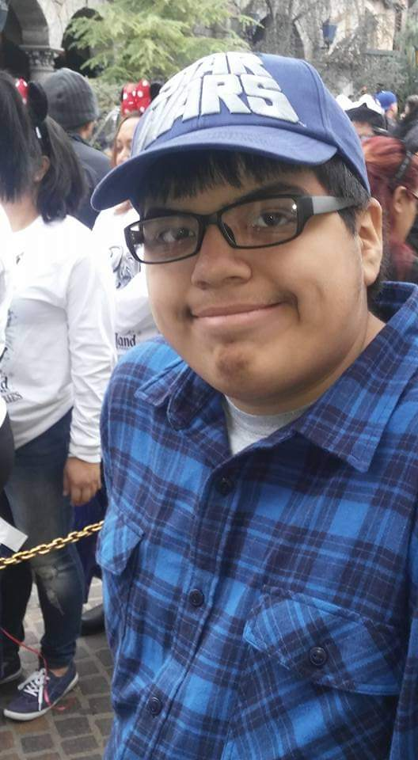

About Me
Where I say a bit about myself.
Education
University of California, Berkeley. GPA:3.18/4.0
Expected Major: Astrophysics ;Minor: Creative Writing
Research Interests
For now my interests lie in computational astrophysics. I feel passionate on simulating cosmology and generally any forms of systems interacting each other. I'm still trying to develop my interests and thusly am inclined to work on any type of coding project, nevertheless any form of observation or analysis interet me.
Personal Statement
Living in downtown Los Angeles and having a unique lifestyle I found that I tend to be adaptable to new concepts and environments as a whole. I'm currently seeking a astrophysics major in Berkeley to pursue my ever growing curiousity in the scientific world and have minored in creative writing due to many of my hobbies and affinity toward writing as awhole in any of its forms. Be that in a informal and artistic manner or of a formal and highly argumentative/studious format. Due to my general curiosity I've always found myself wanting to know more about all forms of science, in addition to always trying to broaden myself with the humanities in addition.
Outside of the academics I've always liked to assist others and even teach to a degree. Taking position and extra curriculars in the past running workshops, community events, and currently part of the Society of Physics Students Peer Mentor Program. In addition I have my own hobbies that all involves some aspects of writing based on inspiration, expressing my own ideas, and to create narratives that would intrigue others.
Currently I'm still trying to figure out what I want for my future goal in education right now. But in response I've taken measures and activities to explore and develop myself to figure that out for myself. Working on research in the field with associaties being one such venture I have in mind, and seek to prosper in. Aside from that I've decided to take my chances to work in the campus, to work with the community in campus, and to help others on their journey's as well.
Thank you for taking your time to know a bit more bout me.
Classes taken
Pending
